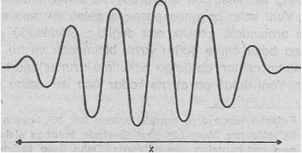

11) KARSITLIKLAR DÜNYASININ ÖTESiNDE
Bir Doğu mistikçisi, tecrübe ettiğimiz olay ve nesnelerin aslında temeldeki o büyük tekliğin farklı delirişlerinden başka bir şey olmadığını söylediğinde. tüm nesnelerin özdeş olduklarını vurgulamaz. Çünkü Doğu mistikçileri nesnelerin kendilerine özgü ve bireysel bir yanlan olduğunu da kabul ederler, (individuality of things). Onlara göre tüm farklılıklar ve karşıtlıklar aslında, her şeyi kapsayan bir bütünselliğin izafi parçalarıdır. Normal bilinçlilik halimizde, karşıtlıkların ve özellikle de zıtlıkların bir birlik oluşturduklarını düşünmek hemen hemen imkânsızdır. Bundan dolayı da bu durum Doğu felsefesinin en zor anlaşılan yönlerinden birisini oluşturmaktadır. Fakat aynı zamanda bu nokta Doğu düşüncesindeki dünya görüşünün köklerini teşkil eden genel bir kavrayıştır.
Karşıtlıklar, aklımızın egemenliği altında doğmuş bulunan soyut kavramlar " oldukları için izafidirler, yani duruma göre değişirler. Dikkatimizi belirli bir kavrama yöneltirken, aynı anda onun karşıtını da yaratmış olunuz. Lao Tzu'ya göre, «eğer dünyadaki herkes güzelin güzel olduğunu anlarsa, çirkin de yaratılmış olur. Eğer herkes iyinin iyi olduğunu anlarsa, kötü de doğmuş olur»(l). Mistikçi ise, aklın hükümranlığı altındaki kavramları aşar ve onları aşarken de tüm karşıtlıkların izafiyetini ve geçiciliğini de kavrar. İyinin ve kötünün, zevkin ve acının, hayatın ve ölümün farklı durumlara ait olan mutlak tecrübeler olmadıklarını, aynı gerçekliğin iki farklı yüzü olduklarım anlar. Bu, aynı bütünün iki aşırı ucu gibidir. Tüm karşıtlıkların kutupsal oldukları ve böylece bir bütün oluşturdukları ile ilgili tecrübe, Doğu'da uygulanan spritüel geleneklerin insana yüklediği en büyük görev ve hedeftir. «Gerçekte sonsuz ol ve dünyasal karşıtlıkları aş!». Bu Krişna'nın Bhagavad Gita'da verdiği en önemli tavsiyedir. Aynı görüşe Buddhizm'de de rastlarız. Örneğin buna bağlı olarak D.T. Suzuki şunları yazmaktadır:
«Buddhizm'in temel düşüncesi, zihinsel ayrımlar ve duyusal etkiler sonucu yaratılan karşıtlıklar dünyasını aşıp, mutlak bir görüş açısını hedefleyen ayrımsız bir dünyayı gerçekleştirebilmektir»(2).
Buddhist öğretinin tümü (ve aslında Doğu mistisizminin bütünü) söz konusu mutlak görüş açısını bulma kaygısı ile yanıp tutuşmaktadır. Bu durum, «acintya» (yanı «akıl olmaması») dünyasında gerçekleşir ve burada tüm karşıtlıkların bütünselliği canlı bir tecrübe haline dönüşür. Bir Zen şairinin dediği gibi:
«Horoz, alacakaranlıkta şafağı müjdeler.
Gecenin, kör karanlığında ise parlak güneşi» (3).
Tüm karşıtlıkların kutupsallığı yaklaşımı (yani, ışığın ve karanlığın, kaybetmenin ve kazanmanın ya da kötünün ve iyinin aynı fenomenin farklı görüntüleri oldukları). Doğu hayat tarzının en önemli prensiplerinden birini oluşturmaktadır. Tüm karşıtlıklar, karşılıklı olarak birbirleriyle bağlantılı olduklarından hiç bir zaman bir tarafın diğerine üstün gelmesi beklenemez. Karşıtlıklar, her iki taratın karşılıklı etkileşiminin birer sonucudur. Bu anlayışa göre yaşayan Doğu'lu ve faziletli bir insan, -iyi için çabalayan ve kötüyü yok etmek isteyen birisi değildir. O daha çok iyi ve kötü arasındaki dinamik dengeyi korumaya ya da yeniden kurmaya çalışmasıyla dikkati çeker.
Bu dinamik denge yaklaşımı, karşıtlıkların bütünselliği konusunun Doğu mistisizminde nasıl algılandığını da yansıtmaktadır. Bu görüş, özellikle Çin bilgelerince, Yin ve Yang olarak isimlendirilen ve kökleri çok eskilere dayanan bir sembolizm aracılığı ile daha da net biçimde vurgulanmıştır. Onlar, Yin ve Yang'ın ardındaki bütünselliğe Tao ismini vermişler ve bu bütünselliği, etkileşimleri oluşturan büyük süreç olarak görmüşlerdir: «Şu anda karanlığı ve hemen sonra da aydınlığı yaratan hep Tao'dur»(4).
Kutupsal karşıtlıkların dinamik etkileşimi, çok basit bir dairesel hareket ve bu hareketin oluşturduğu değişimsel görüntü yardımı ile örneklenebilir. Bir an için, bir topun, bir daire oluşturacak bir biçimde hareket ettiğini varsayalım. Eğer bu hareketin görüntüsünü bir ekrana yansıtacak olursak, hareket, iki uç arasında gidip gelen bir top biçiminde görünecektir. (Çin öğretisi ile olan analojiyi kaçırmamak için büyük daireye TAO ismini, değişimsel hareketinin uç noktalarına da Yin ve Yang isimlerini yazdım). Top, daireyi sabit bir hızla katetmesine rağmen, görüntüde, uçlara gelindiğinde hız yavaşlar, hareket tersine döner ve hızlanarak yeniden başlar. Daha sonra yine yavaşlar ve bu olay sonsuz devirler halinde tekrarlanıp, durur.
Kutupsal karşıtlıkların dinamik birliği
Buna benzer bütün görüntülerde, dairesel bir hareket, iki uç nokta arasında gelip gitme olarak yansıyacaktır. Fakat aynı dairesel hareketin içinde ise, karşıtlıklar bütünleşmekte ve aşılmaktadır. Söz konusu karşıtlıkların dinamik bir biçimde bütünleşmesi, Çin düşünürlerini gerçekten çok etkilemiştir. Daha önce de değindiğimiz Chuang Tzu'nun şu açıklaması, bunu rahatlıkla yansıtmaktadır:
«Tao'nun özü, «şu»nun ve «bu»nun birer karşıtlık oluşturmalarının önüne geçilmesidir. Yalnızca bu öz, bir temel eksen gibi, sonsuza dek gerçekleşen ve öylece sürüp giden değişimlerin merkezinde yer alacaktır.»
Hayatın en temel kutupsallıklarından biri de, insan doğasının erkeksi ve kadınsı yönleri biçiminde karşımıza çıkmaktadır, iyinin ve kötünün, ölümün ve hayatın kutupsallığında olduğu gibi, burada da kadın ve erkek kutupsallığının varlığı nedeniyle, kendimizi tam anlamıyla rahat hissetmemekteyiz. Bundan dolayı da bu kutuplardan birimi ön plana çıkartırız. Örneğin Batı toplumları geleneksel olarak erkek tarafını kadın tarafından daha öne alırlar. Her erkeğin ve her kadının, aslında erkeksi ve kadınsı öğelerin aynı anda bir arada bulunmasıyla var olduklarını anlayacak yerde, tüm erkeklerin erkeksi ve tüm kadınların da kadınsı oldukları, önder rolünün ve toplumdaki tüm imtiyazların da erkeklere verildiği statik bir düzen oluşturulmuştur. Bu yaklaşım ise, insan doğasında bulunan Yang (erkeksi) öğelerin tek yönlü olarak vurgulanmasına sebep olmuştur: Yani sonuçta, hareketliliğe, akılcı düşünceye, rekabete, saldırganlığa ve benzerlerine yol açılmıştır. Erkeksi biçimde yönlendirilmiş toplumumuzda, bilincimizin Yin (kadınsı) biçimleri, yani sezgisel, dinsel, mistik ya da psişik öğeleri sürekli olarak bastırılmıştır.
Doğu mistisizminde ise kadınsı biçimlere de önem verilmiş ve insan doğasının bu iki yüzünün bütünselliğine erişilmek istenmiştir. Gerçeği tamamen kavrayabilmiş bir insan, buna göre, Lao Tzu’nun deyimi ile, «erkeksiyi bilen ve yine de kadınsıyı koruyan» biridir, işte bu yüzden, bilincimizin kadınsı ve erkeksi yönleri arasındaki dinamik dengeyi sağlamak, bir çok Doğu geleneklerinde uygulanan meditasyonun, ana amacı olarak görülmüştür. Yine bu sebeple, sanat eserlerinde bile bu konu ile ilgili yapıtlara rastlamaktayız. Örneğin Elephanta'daki bir Hindu tapınağında bulunan olağanüstü güzellikteki Tanrı Şiva heykelinin üç tane yüzü vardır: Sağdaki yüz, erkekliği ve arzuyu yansıtan erkeksi profili; saldaki yüz, yumuşak, davetkâr ve hoş kadınsı profili yansıtırken, ortadaki yüz ise, bu iki profilin Büyük Tanrı Şiva Mahesvara'nın kafasını oluşturacak biçimde birleşmelerinden ortaya çıkmıştır. Böylece çevresine, her şeyi içine çeken bir huzur, sessizlik ve kendini aşmış bir büyüklük yayılmaktadır. Aynı tapınakta, Şiva iki cinsi i bir biçimde gösterilmektedir. Yani bir yarısı erkek ve diğer bir yarısı da kadın olarak resmedilmiştir. Böylece Tanrı'nın akarcasına hareketli erkeksi bedeni ve buna karşın sakin ve huzurlu kadınsı yüzü, yine erkeğin ve kadının dinamik bütünleşmesini sembolize etmektedirler.
Tantrik Buddhizm'de, kadın ve erkek arasındaki kutupsallık çoğu zaman cinsel semboller kullanılarak yansıtılmaktadır. Örneğin sezgisel bilgi, insan doğasının pasif ve kadınsı yönünü, buna karşın sevgi ve ihtiras ise insan doğasının aktif ve erkeksi yönünü oluşturmaktadır. Bu ilki öğe, aydınlanma anında bütünselleştikleri için, erkek ve kadın Tanrı'lar da cinsel ilişkiye girmenin çeşitli biçimleri ile sembolize edilmeye çalışılmıştır. Yani Doğa mistikçileri insanın kadınsı ve erkeksi yönlerinin birleşmesinin ancak aklın ve dilin hükümranlığından kurtulan ve bu hükümranlığı aşan, tüm karşıtlıkları bir dinamik bütünlük olarak algılayan, üst düzeydeki bir bilinçlilik basamağında gerçekleşebileceğini ifade etmektedirler.
Modern fiziğin de artık bu düzeye eriştiğini daha önce belirtmiştim. Çünkü atom-altı dünyanın araştırılması sonucu, dili ve aklı sürekli bir biçimde aşan bir gerçeklik ortaya çıkmıştır. Daha önceleri karşıt ve birbiriyle bağdaşamaz gibi düşünülen kavramlar da, böylece birbirleriyle birleştirilebilmişlerdir. işin ilginci, ortaya konan bütünselliğin, yeni meydana çıkartılan gerçekliğin, aslımda en önemli niteliği olduğunun a Ulaşılmasıdır. Bağdaştırılamaz gibi gözüken kavramlar, çoğunlukla Doğu mistikçilerinin ilgilenmediği kavramlar gurubunu oluştursalar bile, bu kavramların alışılmışın üstündeki bir düzeyde bütünselleşmeleri, gerçeklik hakkında Doğu mistisizmi ile büyük ve belirgin paralelliklerin ortaya çıkmasına yol açmıştır. Bundan ötürü modern fizikçiler, Uzak Doğu kökenli öğretilerin en temel noktalarını, kendi alanlarında gerçekleştirdikleri tecrübelerle karşılaştırarak kavrayabilmektedirler. Sayıları sürekli bir biçimde artan yeni nesil genç fizikçiler, gerçekten de söz konusu değerli ve heyecan verici Doğu mistisizmine sıcak bakmaya başlamışlardır.
Modern fizik dalında, demin sözünü ettiğimiz karşıt kavramların bütünselliğini, atom-altı düzeylere indiğimizde karşımıza çıkan, parçacıkların aynı anda parçalanabilir ve parçalanamaz özellik gösterdikleri durumlarda görebiliyoruz. Bu düzeylerde, madde hem sürekli ve hem de kesikli olarak gözükmektedir ya da kuvvet ve madde, aynı fenomenin farklı yönleri olarak karşımıza çıkmaktadır. Bundan sonraki bölümde derinlemesine tartışabileceğimiz söz konusu örneklerin tümünde, günlük tecrübelerimize dayanarak geliştirmiş olduğumuz ve genelde karşıtlıklar temeline oturan kavramsal çerçevemizin, atom -altı parçacıkların dünyası için çok dar ve yetersiz geldiği anlaşılacaktır. Bu farklı dünyanın tanımlanması ve açıklanmasında, izafiyet kuramı önemli bir rol oynar. Çünkü «izafî» bir çerçeve dahilinde, kullandığımız klasik kavramlar, daha üst bir boyuta, yani «dört boyutlu uzay-zaman» anlayışına ulaşarak aşılırlar. Birbirinden çok farklı diye kabul edilen uzay ve zaman kavramları da, böylece izafiyet fiziği yardımıyla birleştirilmiş olmaktadır. Söz konusu temel bütünsellik, yukarıda sözü edilen karşıt kavramların birleştirilmesindeki nirengi noktasıdır. Mistikçilerin yaşadıkları ve tecrübe ettikleri bütünsellikte olduğu gibi, burada da «daha yüksek bir düzeye» ihtiyaç vardır. Ve yine mistikçilerin tecrübe ettikleri bütünselliğin dinamik oluşu gibi, izafî uzay-zaman gerçekliğinde de tüm nesnelerin birer süreç olabildikleri dinamik bir gerçeklik ortaya çıkmaktadır.
Görünürde birbirinden ayrı, yalıtılmış ve bağımsız olan varlıkların bir üst boyutta bütünsel (eşmesini tecrübe edebilmek için illa da izafiyet kuramına gerek yoktur. Bu bütünselleşme, bir boyuttan iki boyuta ve iki boyuttan da üç boyuta geçildiğinde aynen yaşanabilmektedir.
Daha önce verdiğimiz dairesel hareket ve görüntü örneğinde, bir boyutta (yani, bir çizgi üstünde) meydana gelen karşıt kutupların devirselliği, iki boyuta yükselindiğinde (yani, dairenin düzlemine gelindiğinde) dairesel bir hareket sonucu bütünselleşmektedir. Aşağıdaki çizim, iki boyuttan üç boyuta geçişte rastlanan bir diğer örneği göstermektedir. Burada bir «lokma» halkasının bir düzlem tarafından kesilmiş olduğunu görüyoruz. Bu düzlemin sahip olduğu iki boyutta, kesitin yüzeyi birbirinden bütünüyle ayrı iki disk olarak görülmektedir. Fakat üç boyuta çıkıldığında, bu disklerin, tek ve aynı nesnenin parçaları oldukları görülmektedir. Ayrı ve bağdaştırılamaz gibi gözüken nesnelerin benzer yoldan gerçekleşen bir birleşmesi de, izafiyet kuramında, üç boyuttan dört boyuta geçildiğinde yaşanır. Çünkü izafiyet kuramının dört boyutlu dünyasında madde ve kuvvet artık birleşmiştir.
Burada madde, gözümüze hem kesikli parçacıklar ve hem de sürekli alanlar şeklinde gözükmektedir. Ancak bu durumda, söz konusu bütünleşmeyi tam olarak gözümüzün önünde canlandıranlayız. Aynı imkânsızlığı yaşayan fizikçiler ise, bu dört boyutlu uzay-zaman dünyasını, soyut ve karmaşık matematiksel formüllerin oluşturduğu kuramlar aracılığı ile «tecrübe» etmeye çalışırlar. Fakat fizikçilerin geliştirdikleri görsel tasarımlar da (diğer insanlarda olduğu gibi) duyularımızın üç boyutlu dünyası ile sınırlıdır. Çünkü konuşma ve düşünme kalıplarımız, bu üç boyutlu dünyada gelişmiştir ve bundan dolayı da izafiyet fiziğinde karşımıza çıkan dört boyutlu gerçeklikle tam anlamı ile baş edemeyiz.
Fakat öte yandan Doğu mistikçileri, üst-boyutlu bir gerçekliği doğrudan ve somut olarak tecrübe edebilmişlerdir. Onlar, derin meditasyon durumunda günlük hayatın ve yaşayışların üç boyutlu dünyasını tüm karşıtlıkların organik bir bütünde birleştikleri çok farklı bir gerçekliğe dönüştürebilmektedirler. Mistikçiler, söz konusu tecrübeyi, kelimelerle açıklamaya çalışırlarken, izafiyet fiziğinin çok boyutlu gerçekliğini açıklamak zorunda kalan fizikçilerin karşılaştıkları zorluklarla karşı karşıya kalmaktadırlar. Lama Govinda'nın dediği gibi:
«Daha üst bir boyutta gerçekleşen bir tecrübeye ancak bilincimizin farklı merkezlerinde ve düzeylerinde meydana gelen tecrübelerimizi bütünleştirerek varabiliriz. Ancak bazı meditasyon tecrübelerini, üç boyutlu bilincimizin düzleminde ve açıklama yeteneğimizi daha da daraltan mantık sistemimizde açıklamak veya açıklamaya kalkmak, düşünce sürecimizi ayrıca sınırlayacaktır»(5).
İzafiyet kuramımın dört boyutlu dünyası, modern fizikte, karşıt ve bağdaşmaz gibi gözüken kavramların aslında aynı gerçekliğin farklı görüntüleri olduklarını gösteren tek örnek değildir. Böyle bir karşıtlık birleşmesinin belki de en ünlü örneği, atom fiziğinde kullanılan parçacık ve dalga kavramları ile ilgilidir.
Madde, atom-altı düzeye inildiğinde, ikili bir görünüme bürünür. Yani hem parçacık, hem de dalga olarak karşımıza çıkar. Bu ikilikten hangisinin geçerli olduğu, o anki duruma bağlıdır. Yani bazı durumlarda parçacık görünümü baskın iken, diğer bazı durumlarda da parçacıkların dalga görünümü öne çıkmaktadır. işte bu ikili doğa, ışık ya da diğer elektromanyetik ışınımda da karşımıza çıkmaktadır. Örneğin ışık, «kuanta» ya da foton aracılığı ile soğurulur (yani, absorbe edilir veya emilir) ya da yayılır. Fakat bu parçacıklar uzayın içinde hareket ettiklerinde, tireşen manyetik ve elektrik alanları gibi davranırlar ve dalgaların bütün karakteristik özelliklerini bünyelerimde toplarlar. Öte yandan elektronlar ise, normalde «parçacık» olarak kabul edilmesine rağmen, bir elektron demeti dar bir aralıktan geçtiğinde, bir ışık demeti gibi kırılmaktadır, yani diğer bir deyişle; elektronlar da dalgalar gibi davranırlar.
Bir parçacık Bir dalga
Maddenin ve ışınımın bu ikili görünümü gerçekten de anlaşılamaz bir durum yaratmış ve Kuantum kuramının formüle edilmesine yol açan bir çok «kuantum koanları»na neden olmuştur. Çünkü durmadan uzaya dağılan bir dalganın görüntüsü, kesin bir konuma sahip olan bir parçacığın görüntüsünden çok farklı gibidir. Bu yüzden de fizikçilerin, maddenin, birbiri ile bağdaştırılamaz gibi gözüken biçimlerde belirdiğini (yani, parçacıkların dalga ve dalgaların da parçacık olduklarını) kabul etmeleri uzun seneler almıştır.
Konuya yabancı olan birisi, yukarıdaki şemaya (bakarak sağdaki görüntünün, dalga şeklinde hareket eden bir parçacığa ait olduğumu söyleyerek belki de sorunu kökünden halletmeyi düşünebilir. Fakat bu argüman, dalgaların davranış özellikleri ile ilgili bir yanlış anlamanın sonucudur. Çünkü doğada dalga şeklinde hareket eden hiç bir parçacık yoktur. Örneğin bir su dalgasında, parçacıklar dalgayla birlikte hareket etmezler. Onlar, dalga, bulundukları noktayı geçtiğinde kendi çevrelerinde bir daire çizerek hareket ederler. Buna benzer biçimde ses dalgalarının oluşumu da açıklanabilir. Burada havadaki parçacıklar dalgayla birlikte taşınmazlar, onlar yalnızca oluşan harekete titreşerek cevap verirler. Dalgayla birlikte taşınan şey, maddesel parçacıklar; değil, yalnızca dalgayı oluşturan fenomendir: Bundan dolayı Kuantum kuramında bir parçacığın aynı anda bir dalga olduğunu söylediğimizde, bir parçacık yörüngesinden (particle's trajectory) söz edemeyiz. Anlatmak istediğimiz şey, dalga kalıbının bütünsel olarak, parçacığın bir belirimi olduğudur. Bundan dolayı da hareket eden dalgaların görüntüsü, hareket eden parçacıkların görüntüsünden çok farklıdır. Victor Weisskopf'un da dediği gibi: «Göl üstünde hareket eden dalgaların hareket biçimi, aynı yönde yüzen bir gurup balığın hareketinden çok farklıdır(6).
dalga yönü
Bir su dalgası
Dalga fenomeni fiziksel dallarda bir çok farklı konumda karşımıza çıkmaktadır. Ama oluşan her türlü dalgayı aynı matematiksel formüllerle açıklamak mümkündür. Örneğin ışık dalgalarını, titreşen bir gitar telini, bir ses dalgasını ya do bir su dalgasını açıklamak için hep aynı tür matematiksel formları kullanırız, işte Kuantum kuramında, bu formlar da, parçacıklarla bağlantılı olan dalgaları açıklamak
için kullanılır. Ancak bu sefer, incelenen dalgalar çok soyutturlar. Onlar, Kuantum kuramının istatistiksel doğası ile yakından ilgilidirler. Yani atomsal fenomenlerin yalnızca bazı olasılıklar aracılığı ile belirlenip, açıklanabilmesi gerçeğiyle yüzyüzedirler. Bir parçacığın olasılıkları hakkındaki bilgi, «olasılık fonksiyonu» olarak adlandırılan bir değerle ifade edilmektedir. Bu büyüklüğün matematiksel formu ise, bir dalganınki gibidir. Yani dalganın diğer türleri için kullanılan formlara çok benzemektedir. Fakat parçacıklarla bağlantılı olan dalgalar, su dalgaları ya do. ses dalgaları gibi «gerçek» ve üç boyutlu değildirler. Onlar birer «olasılık dalgasından» ibarettirler. Söz konusu olasılık dalgası ise, parçacıkların farklı yerlerde ve farklı özelliklerde bulunma olasılıkları ile bağlantılı olan matematiksel bir değer olarak karşımıza çıkar.
Olasılık dalgalarının ortaya atılması, bir bakıma, dalga halinde bulunan parçacık karşıtlığını çözmeyi başarabilmiş, ama bu olguyu aynı anda çok değişik bir konum içine de sokmuştur. Hatta bizi, giderek çok daha temel olan bir karşıt kavramlar çiftine (yani, var olma ve var olmama kavramlarına) götürmüştür. Bu karşıtlıklar çifti, atomsal gerçekliğin anlaşılması ile aşılabilmiştir. Buna göre, bir atomsal parçacığın belirli bir yerde bulunup bulunmadığını kesin olarak söyleyemediğimiz gibi, onun var olup, olmadığını da kesinlikle ileri süremeyiz. Bir olasılık kalıbı halindeki parçacık, değişik yerlerde bulunma eğilimleri göstermektedir. Bunun için de, var olmak ve var olmamak arasında, bize çok yabancı gelen bir fiziksel gerçeklik belirimi göstermektedir. Bu nedenle bir parçacığın durumunu belirli ve sabit kavramlarla (ki bunlar bazen karşıt da olsa) açıklayamayız. Yani parçacık kesin olarak bir yerde ne vardır ve ne de yoktur. Ne konumunu değiştirmektedir ve ne de hareketsiz bir durumdadır. Değişen şey, parçacığın olasılık kalıbı ve aynı zamanda parçacığın belli yerler de var olma eğilimleridir. Robert Oppenheimer bu konuda şunları yazmaktadır:
«Örneğin «bir elektron sahip olduğu konumu değiştirmez mi?» diye sorarsak buna, «hayır, değiştirir» diye cevap vermemiz gerekir. Ancak öte yandan «bir elektron zamanla sahip olduğu konumunu değiştirir mi?» diye sorarsak, buna «hayır, değiştirmez» şeklinde cevap vermeliyiz. Eğer «elektronun durağan mı olduğunu» sorarsak, buna «hayır, hareketlidir» diye cevap veririz. Ve eğer «elektron hareketli midir?» diye sorarsak, bunun cevabı da «hayır, durağandır» biçiminde olacaktır.» (7)
Atom fizikçilerinin gerçekliği, bir Doğu mistikçi-sinin gerçekliği gibi, karşıt kavramların dar çerçevesini aşmaktadır. Oppenheimer'in sözleri bu açıdan aşağıdaki Upanişadlar'ın bir yansıması gibidir adeta
«O hem hareket eder, hem etmez.
O hem uzaktadır, hem yakında.
O her şeyin, içindedir.
Ve aynı zamanda da her şeyin dışında» (8).
Kuvvet ve madde, parçacık ve dalga, hareketlilik ve hareketsizlik, var olma ve var olmama, işte bunlar modern fizik aracılığı ile aşılmış olan karşıt ya da bağdaşmaz kavramlardan bazılarıdır. Söz konusu karşıt çiftler içinde belki de en önemlisi ve temellisi, en son sayılanıdır, işte atom fiziği yardımı ile var olma ve var olmama kavramlarını bile aşmış bulunuyoruz. Bu, Kuantum kuramının en can alıcı özelliği ve niteliğidir. Fakat aynı zamanda da kabul edilmesi en güç olan yanıdır. Bumun yorumu hakkındaki tartışmalar, halen devam etmektedir. Aynı zamanda var olma ve var olmama kavramlarının aşılmış olması, Doğu mistisizminin, en anlaşılmaz yönünü de meydana getirmektedir. Atom fizikçilerinin yaşadıkları gibi, Doğu mistikçileri de var olma ve var olmamanın ötesinde duran bir gerçeklikle birlikte yaşamaya çalışmaktadırlar. Ayrıca Doğu mistikçileri, bu önemli olguyu da sık sık tekrarlamaktadırlar. Örneğin Aşvagoşa bu konuda şöyle der:
«Oluş (suchness) ne var olandır, ne var olmayandır. Ne aynı anda «var olan ve var olmayandır» ve ne de aynı anda olmayan «var olan ve var olmayandır.» (9)»
Karşıt kavramların ötesinde bir gerçeklikle karşılaşan fizikçi ve mistikçiler, özel bir düşünme yönteminin varlığını da hep beraber kabul etmişlerdir. Bu yöntemde akıl, klasik mantığın katı çerçevesine hapsolmamıştır. Sahip olduğu görüş açısını sürekli bir biçimde farklılaştırmakta ve değiştirmektedir. Örneğin atom fiziğinde, maddeyi tanımlayıp, açıklamak için, hem parçacık ve hem de dalga kavramını aynı anda kullanmaya mecburuz. Bu iki değişik görüntü ile «oynamayı» ve atomsal gerçeklik ile başedebilmek için bir görüntüden diğer görüntüye atlamayı öğrenmiş bulunuyoruz. Bu ise, karşıtı (klorun ötesindeki gerçeklik ile ilgili tecrübelerini yorumlamak isteyen bir Doğu mistikçisinin düşünce tarzına çok benzemektedir. Lama Govinda'nın dediği gibi: «Doğu'daki düşünce tarzı, daha çok meditatif düşünme çevresinde dönmektedir. Yani farklı bakış açılarından elde edilmiş etkileşimlerin birleşmesiyle oluşan, çok yönlü ve çok boyutlu bir bütünsel etki gibidir.» (10)
Atom fiziğinde parçacık görüntüsünden dalga görüntüsüne nasıl gidip gelebildiğimizi, dalga ve parçacık kavramlarını daha da yakından inceleyerek görmeye çalışalım. Bir dalga, zaman ve uzay içinde meydana gelen bir titreşim kalıbıdır. Söz konusu dalgaya belirli bir zaman dilimi içerisinde bakmak mümkündür. Böylece uzay içinde oluşan devirsel bir kalıp meydana gelmektedir.. Bu devirsel kalıbı aşağıdaki örnekte göstermeye çalışalım.
Bir dalga kalıbı
Bu kalıp, bir A genliği (yani, titreşim genişliği) ve bir L dalgaboyu (yani, dalga tepeciği arasındaki uzaklığı) ile karakterize edilmektedir. Bir alternatif olarak dalganın belirli bir noktasına sürekli bir biçimde bakabiliriz. Böyle yaptığımızda, belirli bir frekansa (yani, bir saniye içinde meydana gelen gelip gidişlere) sahip salınımların oluştuğunu görürüz. Burada ise, parçacık görüntüsüne geri dönelim. Klasik görüşe göre, bir parçacık, her zaman diliminde belirli ve tam olarak tanımlanmış bir konuma sahiptir. Parçacığın sahip olduğu hareket de, hız ve hareket enerjisi aracılığı ile tam olarak açıklanabilmektedir. Örneğin yüksek hızlarla hareket eden parçacıklar, bu görüşe göre, yüksek enerjilere sahip olacaklardır. Aslında fizikçiler, parçacığın hareket durumunu açıklamak üzere «hız» kavramını çok ender kullanırlar. Onlar daha çok «moment» olarak adlandırılan ve parçacığın kütlesi ile onun hızının çarpımından oluşan bir büyüklüğü değerlendirmelerine temel olarak alırlar.
Kuantum kuramı da, olasılık dalgasının özelliklerini, onlara denk düşen parçacığın özellikleri ile birleştirerek belirli bir yerdeki dalganın genliğini, parçacığın o yerde bulunma olasılığı ile orantı tomaktadır Genliğin büyük olduğu yerlerde, bir parçacığı bulma olasılığımız yüksek olacaktır. Küçük olan yerlerde ise, bir parçacık bulma şansımız yoktur. Örneğin bir önceki sayfadaki dalga katarı (dalga kalıbı), tüm uzunluğunda eşit bir genliğe sahiptir. Yani herhangi bir parçacık, dalga boyunca herhangi bir yerde eşit olasılıkla bulunabilecektir (*).
(*) Bu örnekte, dalga tepeciklerinde bir parçacığı bulma olasılığının, dalga düzlüklerinde bulma olasılığından az olduğu düşünülmemelidir. Burada, gösterilen statik dalga kalıbı sürekli bir titreşimin bir anlık «fotoğrafı» olarak kabul edilmelidir. Bu nedenle, dalga boyunca bulunan her nokta, devirsel süreçler sonucu tepeciğin doruk noktasına erişecektir.
Parçacığın hareket durumu hakkındaki bilgi, dalga boyunun ve frekansın ardında gizlidir. Dalga boyu, parçacığın momenti ile ters orantılıdır. Bunun anlamı, küçük bir dalga boyuna sahip olan bir parçacığın, yüksek bir moment ile (ve buna bağlı Olarak da yüksek bir hızla) hareket etmekte olduğudur Dalganın frekansı ise, parçacığın enerjisi ile doğru orantılıdır. Yani yüksek frekansa sahip bir dalga, ona ait parçacığın yüksek bir enerjiye sahip olduğunu gösterir. Işığı ele alalım. Mor ışık yüksek bir frekanstan ve kısa bir dalga boyundan oluştuğu için, onun fotonları da yüksek bir enerjiye ve yüksek bir momente sahip olmaktadırlar. Ama öte yandan kızıl ışık düşük bir frekanstan ve uzun bir dalga boyundan oluştuğundan, fotonları da düşük enerjiden ve küçük bir momentten oluşmaktadırlar.
Örneğimizdekine benzer bir şekilde yayılan bir dalga, ona denk düşen parçacıkların konumu hakkında pek fazla bir şey ortaya koymaz. Böyle bir dalgada, parçacık aynı olasılıkla herhangi bir yerde bulunabilmektedir. Fakat çoğu kez, parçacığın konumunu aşağı yukarı kestirebiliriz. Bir atomda bulunan elektronlarda olduğu gibi. Böyle bir durumda, bir parçacığı belirli yerlerde bulma olasılığı, belli bir bölgeye sıkıştırılmış olduğu için, bu bölgenin dışında, parçacığı bulma olasılığı sıfır olacaktır. Buna benzer bir durum aşağıdaki diyagram yardımı ile elde edilebilir. Burada söz konusu parçacık, X bölgesine sıkıştırılmıştır.

x bölgesinin herhangi bir noktasında bulunan bir parçacığın dalga paketi
Böyle bir kalıba «dalga paketi» denmektedir (*). Bu dalga paketi, X bölgesinin dışında birbirini yok ederek girişim gösteren farklı uzunluktaki dalga boylarına sahip, çok sayıda dalga katarından (dalga kalıbından) oluşmaktadır. Böylece toplam genlik ve buna bağlı olarak da parçacığın orada bulunma olasılığı, buralarda sıfır olmasına rağmen, X bölgesi içinde yukarıdaki kalıp meydana gelmektedir, Bu kalıp, parçacığın X bölgesinin herhangi bir noktasında bulunduğunu göstermesine karşılık, onun konumunu daha da belirgin bir hale getirmemize imkân tanımamaktadır. Söz konusu bölgenin dahilindeki noktalar için yalnızca parçacığın bulunma olasılıklarını belirleyebiliriz. (Örneğin burada, parçacık büyük bir olasılıkla, olasılık genliğinin yüksek olduğu orta bölgede bulunacaktır. Buna karşın genliğin küçük olduğu dalga paketi kenarında ise parçacığa rastlama olasılığı daha küçük olacaktır.) Yani dalga paketinin uzunluğu, parçacığın konumunu belirlemedeki belirsizliğin bir göstergesi gibidir.
(*) Kolaylık olsun diye burada uzayın tek bir boyutu ile ilgileniyoruz. Yani bir çizgi üzerinde bulunan elektronun konumundan söz ediyoruz. Daha önce belirttiğimiz gibi, olasılık kalıpları ise, daha karmaşık dalga paketlerine denk düşen iki boyutlu örnekleri oluşturmaktadırlar.
Böyle bir dalga paketinin çok önemli bir diğer özelliği de, kesin bir dalga boyuna sahip olmamasıdır. Yani kalıp boyunca peş peşe gelen iki tepe noktası arasındaki uzaklık eşit değildir. Görüldüğü gibi dalga boyu enine doğru yayık biçimdedir ve bu yayılmanın miktarı da dalga paketinin uzunluğuna bağlıdır. Yani dalga paketi ne kadar kısa ise dalga boyundaki yayılma da o kadar büyük olacaktır. Bunun aslında Kuantum kuramı ile bir ilgisi yoktur. Söz konusu durum, daha çok dalgaların özellikleri ile ligindir. Dalga paketleri, belirli ve kesin bir dalga boyuna sahip değildirler, işte bu noktada dalga boyunu, ona denk düşen parçacık ile ilişkilendirdiğimizde, karşımıza tüm ihtişamı ile Kuantum kuramı çıkmaktadır. Eğer dalga paketi tam olarak tanımlanmış bir dalga boyuna sahip değilse, parçacık da tam olarak tanımlanmamış bir momente sahip olacaktır. Bu ise, parçacığın konumu ile ilgili bir belirsizliğin yanında (yani, dalga paketinin uzunluğu ile ilgili olarak) onun momenti ile ilgili bir başka belirsizliğin (ki bu da dalga boyunda meydana gelen yayılmadan kaynaklanmaktadır) ortaya çıkması demektir. Söz konusu iki belirsizlik birbirine sıkı sıkıya bağlıdırlar. Çünkü dalga boyundaki yayılma (yani, momentteki belirsizlik) dalga paketinin uzunluğuna (yani, konumdaki belirsizliğe) bağlıdır. Eğer parçacığın konumunu daha kesin bir biçimde belirlemeye kalkarsak, yani söz konusu dalga paketini daha küçük bir bölgeye sıkıştırmak istersek, bu, dalga boyunda bir yayılma artışına neden olacak ve böylece parçacığın momentin-deki belirsizliğin artmasına yol açacaktır.
Konum ile moment belirsizlikleri arasındaki bu ilişkinin detaylı matematiksel formu, Heisenberg Belirsizlik Bağıntısı (ya da kısaca «belirsizlik ilkesi») olarak ünlenmiştir. Bunun anlamı ise, atom-altı dünyaya «dalındığında», bir parçacığın hem konumunu ve hem de momentini aynı anda büyük bir kesinlikle belirleyemeyeceğimizdir. Konumunu ne kadar kesin belirlersek, moment de o kadar belirsiz olacaktır (ve doğal olarak bumun tersi de doğrudur). Bu iki büyüklükten ancak bir tanesini kesin olarak ölçmeye karar verebiliriz. Fakat o zaman da, diğer büyüklüğü tamamen göz ardı etmemiz gerekir. Bir önceki bölümde de değindiğim gibi, söz konusu belirsizlik, sahip olduğumuz ölçüm tekniklerinin yetersizliğinden kaynaklanmamaktadır. Bu, temel ilkenin getirdiği ve aşılamaz olan bir sınırlamadır (limitation of principle). Eğer parçacığın konumunu büyük bir doğrulukla ölçmeye karar verirsek, ilke olarak, o parçacık tam olarak belirlenemeyen bir momente sahip olacaktır (ve tabii ki tersi de geçerlidir).
Bir parçacığın konumu ile momenti arasındaki belirsizlik ilişkisi, belirsizlik ilkesinin tanımladığı tek durum değildir. Buna benzer ilişkiler, diğer matematiksel değerler için de geçerlidir (örneğin atomsal bir olayın oluşma süresi ile bu olayın içerdiği enerji arasındaki ilişkide olduğu gibi). Bu durumu çok kolay bir biçimde göz önüne getirebiliriz. Bunun için daha önce gördüğümüz dalga paketini, uzaysal bir kalıp olarak değil de, titreşen bir zamansal kalıp olarak görmemiz gerekmektedir. Parçacık, gözlemi yapılan belirli bir noktadan geçtiğinde, o noktadaki dalga kalıbının titreşimi, ilk önce küçük genliklere sahip olacak, daha sonra bu genlikler büyüyecek ve nihayet yeniden küçülerek bir süre sonra da hareketi kesilecektir. Bu kalıptan geçme süresi, parçacığın gözlem noktamızdan geçme süresini temsil etmektedir. Geçişin bu zaman dilimi içinde gerçekleştiğini söyleyebiliriz, ama bundan daha detaylı bir bilgiyi ortaya koymamız mümkün olmaz. Titreşim kalıbının süresi, bu durumda, olayların zamansal belirsizliğini temsil etmektedir.
Dalga paketinin uzaysal kalıbında nasıl ki tam olarak tanımlanmış bir dalga boyuna rastlayamıyorsak, buna denk düşen zaman içindeki titreşimsel kalıpta da tam olarak tanımlanmış bir frekansa rastlayanlayız. Söz konusu frekanstaki yayılma, titreşimsel kalıbın süresine bağlı olacaktır. Kuantum kuramı, dalganın frekansını parçacığın enerjisi ile bağdaştırdığından, kalıptaki frekansta meydana gelen yayılma, parçacığın enerjisinde bir belirsizliğe neden olacaktır. Böylece, zaman içinde oluşan bir olayın belirsizliği, enerjisindeki bir belirsizlikle, (aynen parçacığın uzaysal konumundaki belirsizliğin momentteki belirsizlikle ilişkilendiği gibi)1 paralel gidecektir. Bunun anlamı ise, bir olayın oluşma süresi ile o olayın içerdiği enerjiyi aynı anda ve büyük bir kesinlikle belirleyemeyeceğimizdir. Çok kısa bir zaman süresi içinde gerçekleşen olaylar, enerji açısından büyük bir belirsizliği içermektedirler. Öte yandan kesin bir miktarda enerji içeren olaylar da, ancak çok uzun bir zaman süresi içinde belirlenebilirler.
Belirsizlik ilkesinin en önemli özelliği, sahip olduğumuz klasik kavramların sınırlılığını kesin bir matematiksel forma sokarak gösterebilmiş olmasıdır. Daha önce de anlatıldığı gibi, atom-altı dünya, bütünsel bir birliğin bölümleri arasındaki ilişkilerden oluşan bir ağ gibi görünmektedir. Alıştığımız makroskopik tecrübelerimizden oluşan klasik yaklaşımlarımız, bu dünyayı tam anlamı ile açıklamak konusunda çok yetersiz kalmaktadırlar. Ayrı ve bağımsız fiziksel varlıklar kavramı artık (örneğin «parçacık»), temel bir öneme sahip olmayan pratik bir idealleştirme şekline dönüşmüştür. Söz konusu kavram, yalnızca bütünsellik dahilindeki bağlantıları açısından önem taşımakta ve tanımlanabilmektedir. Bu bağlantılar da, daha çok istatistiksel özelliktedirler. Yani kesinlikler yerine olasılıklardan oluşan bir dünyadır bu. Bağımsız fiziksel bir varlığın özelliklerini klasik 'kavramlar çerçevesinde tanımlayıp, açıklarken, yani konum, enerji, moment, vs. gibi kavramları kullanırken, bazı kavramların bir çift oluşturduğunu ve birbirleri ile aynı anda açıklanamaz bir ilişkide bulunduklarını görürüz. Fiziksel «nesneye» söz konusu kavramlardan bir tanesini uyguladığımızda, diğer kavram be-lirsizleşmekte ve ikisi arasındaki kesin ilişki de belirsizlik ilkesinin kuralları aracılığı ile ortaya konabilin ektedir.
Niels Bohr, klasik kavramlar arasındaki bu ilişkiyi daha iyi gösterebilmek için, tamamlayıcılık (complementarity) yaklaşımımı ortaya atmıştır. Bohr parçacık görüntüsü ile dalga görüntüsünün aynı gerçekliğin birbirlerini tamamlayan iki farklı yansıması olduğunu ileri sürer. Bu yansımalardan her biri, kendi başına yalnızca sınırlı ölçüde geçerli ve doğru olmaktadır ve kısıtlı bir kullanım alanına sahiptir. Atomsal gerçekliğin tam bir görüntüsünü verebilmek için, söz konusu yansımaların ikisini birden kullanmak ve bunları belirsizlik ilkesinin çizdiği sınırlar dahilinde uygulamak gerekir.
Tamamlayıcılık yaklaşımı, günümüz fizikçilerinin doğayı algılama tarzlarının en önemli unsuru haline gelmiştir. Buna dayanarak Bohr, bu yaklaşımın, fizik dışı alanlarda kullanılan kavramlara da uygulanmasını önermiştir. Gerçekten de, 2500 sene öncesinde görüldüğü gibi, tamamlayıcılık yaklaşımı, çok verimli bir düşünce sistemi haline dönüşmüştür. Çünkü 2500 sene önce, eski Çin düşüncesi ve öğretisi, karşıt kavramların kutupsallığını (ya da tamamlayıcılığını) kavrayabilmişti. Çin bilgelerin, karşıtlıkların söz konusu tamamlayıcılığını, Yin ve Yang kutupları olarak göstermişler ve bunların dinamik etkileşimlerini, tüm doğal fenomenlerin ve insana özgü durumların özü olarak görmüşlerdir.
Niels Bohr, kendi yaklaşımı ile Çin Öğretisi arasındaki paralelliklerin farkına varmıştı. 1937 senesinde (yani, Kuantum kuramı ile ilgili yorumlarını bütünüyle tamamladığı bir tarihte) Çin'e gittiğinde, eski Çin'in «kutupsal karşıtlıklar» yaklaşımından çok etkilenmiş ve o günden sonra da Doğu medeniyetlerine olan ilgisini sürekli canlı tutmuştu. Bundan on sene sonra, Niels Bohr, bilimsel alanda sağladığı gelişmelerden ve Danimarka kültür hayatına bahşettiği büyük katkılardan ötürü «şövalye» nişanı ile onurlandırıldı. Bunun üzerine şövalyelik arması için uygun bir motif bulması gerektiğinde ise, Yin ve Yang'ın tamamlayıcı ilişkisini temsil eden Çin kaynaklı «t'ai-chi» sembolünü seçmişti. Bu sembolün yanı sıra, armasına «Contraria sunt complementa» (yani, «karşıtlıklar birbirlerini tamamlarlar») sözünü katan Niels Bohr, böylece eski Doğu bilgeliği ve Çağdaş Batı bilimi arasındaki güçlü uyumu da vurgulamıştı.